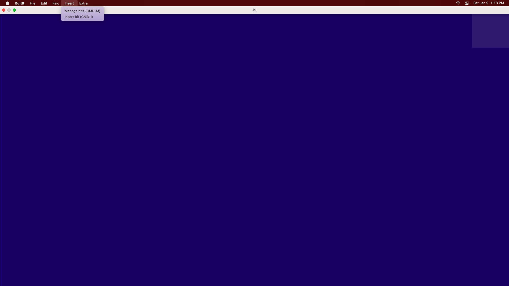

In EditR, there is a menu called "Insert". When you click on it, two buttons pop up: "Manage bits" and "Insert Bit"
These bits are lines of code you can insert to any document at any time.
To edit these, click "Manage bits"
EditR still has a lot of bugs with bits, such as when you try to delete them.
I wouldn't reccomend using bits much yet, with all the bugs that happen.
Until then, use Atom or VS Code or whatever text editor you like.